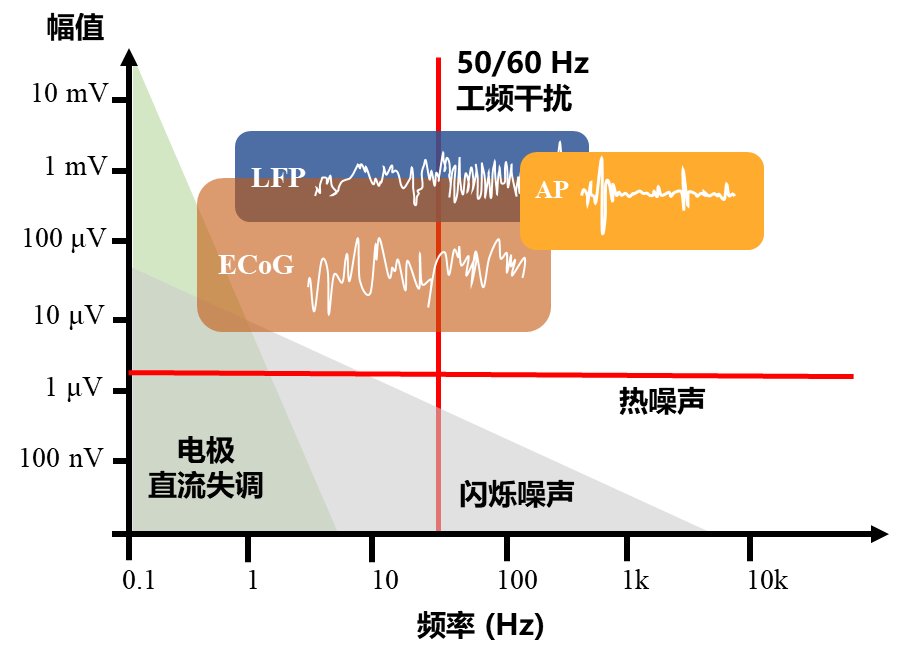
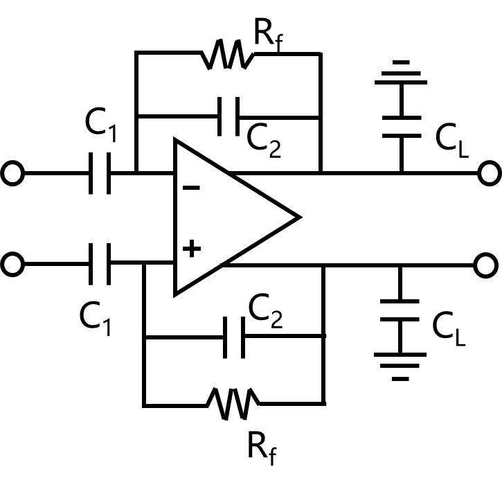
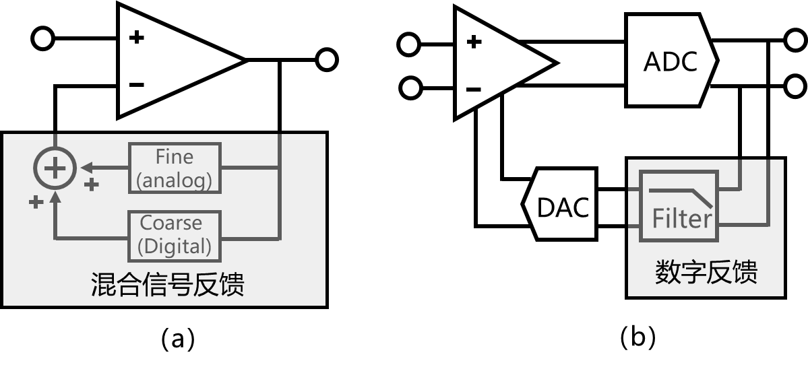
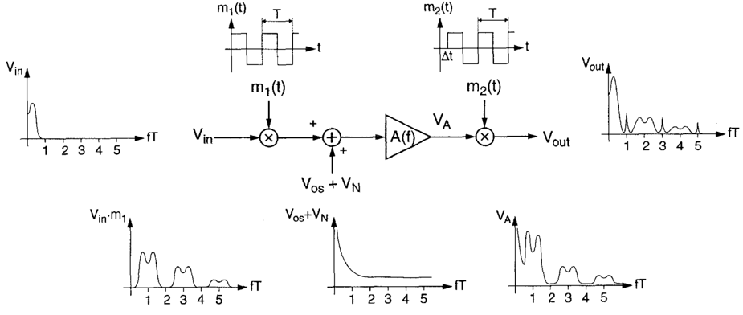
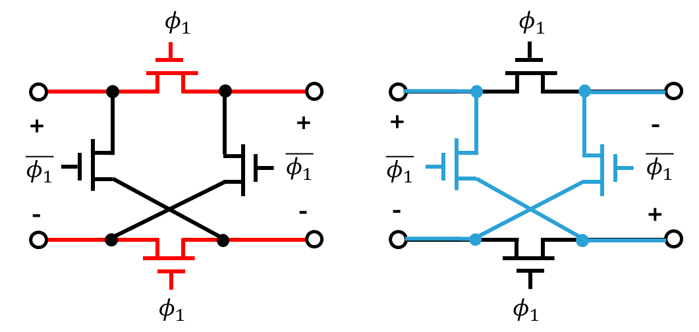
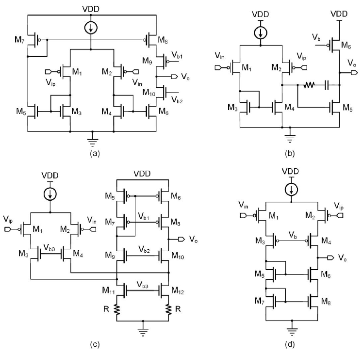
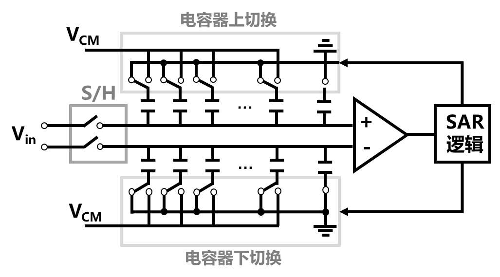
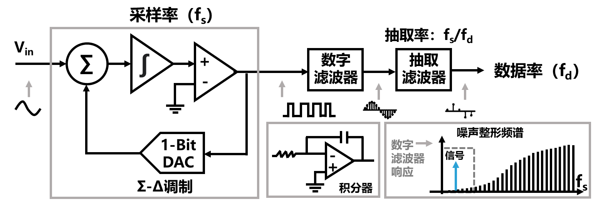
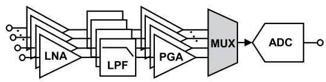

神经信号读出电路设计
主要噪声来源
侵入式脑机接口系统工作时除了探测LFP、AP等信号外，还受到大量无关信号的干扰。如图8-4所示，主要的干扰信号包括电极直流失调（electrode dc offset，EDO），闪烁噪声（flicker noise，1/f噪声），热噪声以及电力线干扰[9]。直流失调来源于电极通道上电极-组织界面处的电化学反应，不同的通道之间的直流失调电压可达1 mV 到50 mV不等。由于直流失调电压远高于信号强度，很容易导致放大器饱和。闪烁噪声主要分布在低频部分，具有功率谱密度与频率成反比的特征，所以也被称为1/f噪声。热噪声则与1/f噪声不同，它在所有频谱中以相同的形态分布，对信号的影响相对有限。电力线干扰是包括EEG、ECG等多种电生理信号中都存在的一种常见噪声源，是50Hz或60Hz市电对放大器输入端之间形成的共模干扰。植入式脑机接口芯片的一个重要工作是在较低面积和功耗开销下，放大感兴趣的信号，降低噪声影响，提高信号品质。

图8-4 神经信号与噪声的关系
表8-1 神经信号读出电路一般性指标
| 输入阻抗 | >100MΩ |
|---|---|
| 噪声 | <5-10μVrms |
| 带宽 | 1Hz-10kHz |
| 增益 | > 40 dB |
| 共模抑制比 | >60dB |
| 电源抑制比 | >60dB |
| 直流失调抑制 | 50mV |
| 平均每通道功耗 | <10μW |
| 平均每通道面积 | <0.04mm2 |
在保证所采集的神经信号质量的前提下，为了解决上述问题，需要模拟前端电路满足一些要求。表8-1概括了神经信号读出电路的一般性指标。例如，为了避免芯片发热导致的组织升温，平均每个通道的功耗需尽量保持小于10μW。放大器的带宽需覆盖LFP、AP等所需信号的带宽以满足完整的信号探测要求，等效输入噪声在信号带宽内积分后的均方根应小于神经信号幅度，否则神经信号将淹没在噪声中。为了消除市电以及电源波动的干扰，需要保持较高的共模抑制比和电源抑制比，为了避免放大器饱和，需要具备一定的失调抑制能力。根据不同的脑机接口应用，芯片要求通常会高于上述通用标准。
直流失调抑制
在侵入式脑机接口芯片中，电极直流失调信号远高于神经信号本身，极易导致放大器饱和。因此，消除直流失调是神经信号读出电路设计的重要问题之一[10]。最为常用且直接的方法是采用高通滤波，通过设置一个Hz以下高通截止频率，可以对神经信号正常放大，而对低频直流信号抑制，从而避免放大器饱和的问题。
图8-5展示了通过电容耦合方式实现高通滤波的经典电路[11]，其中反馈环路中伪电阻Rf和电容C2共同引入了截止频率为1/(2πRfC2)的高通极点，而中频增益则为电容C1和C2之比。尽管该电路在植入式脑机接口芯片中广泛采用，但是其在使用过程中存在芯片面积较大的问题。例如，为了将截止频率降低至1Hz以下且实现较高增益，即使将C2电容的大小选择为约200fF的最小电容，C1电容的大小仍需在10pF以上。这样会占用较大的芯片面积，限制了芯片的集成度和扩展性。此外，该电路所用的伪电阻阻值对工艺敏感，不易精确控制，这会影响放大器截止频率。

图8-5经典的交流耦合神经信号放大器
另一种消除直流失调的方法是对输出端信号进行低通滤波，并将滤波后的低频信号通过负反馈回传到输入端，在传递函数中引入一个高通极点，实现高通滤波的功能[12]。这种方法能够自动对失调电压信号进行跟踪，并借助驱动放大器的反相输入来抵消它，达到抑制直流失调的效果。如图8-6所示，假设放大器的直流增益为A，反馈回路的直流增益为B，那么输入电压Vin与输出电压Vout的关系为：
\(V_{out} = \frac{1}{\frac{1}{A} + B}V_{in}\) (8-1)
由于放大倍数A远大于1，因此可认为\(V_{out} \approx V_{in}/B\)。
图8-6 通过在反馈回路中使用低通滤波器实现直流失调抑制
图8-7（a）中电路通过反馈回路中的模拟积分器实现低通滤波，来去除输入信号中的低频部分。这种设计需要放大器在反馈环路中消耗较多功率，并且其单端配置不适于对低噪声、共模抑制比和电源抑制比要求较高的场景[13]。图8-7（b）中电路的低频和直流信号被反馈至差动差分放大器的第二个差分对，从而消除了信号的低频和直流成分[14]。电路中利用了一个R-C滤波器作为模拟低通滤波器，为了实现较小的高通极点频率，仍需要较大的电阻电容值。
图8-7基于模拟的直流伺服环路
近年来，基于数字直流伺服环路的方式被广泛应用于直流失调抑制[15]。图8-8（a）的电路设计利用反馈中的数字低通滤波器来降低功耗，并使用附加的模拟低通滤波器来降低经过数字路径的直流信号的动态范围，从而放宽DAC分辨率的要求。图8-8（b）利用数字电路实现低通滤波，消除了大电容或者放大器的使用，有效的降低了面积和功耗，且可实现较为精确的极点控制。利用数字反馈的典型直流失调抑制范围约在±50mV左右。

图8-8基于数字的直流伺服环路
斩波技术
为了消除放大器中的低频噪声，可以采用多种方法，包括自调零技术、相关双采样技术和斩波技术等[16]。在低噪声和低功耗的要求下，斩波技术是一种在侵入式脑机接口芯片设计中较为普遍的选择[17-19]。
斩波技术的主要原理是利用周期性方波的交流调制信号，将失调电压以及闪烁噪声等低频信号调制至高频，然后通过低通滤波器来消除这些噪声。其具体工作原理如图8-9所示[16]。输入为Vin的脑电信号在方波信号m1(t)控制的开关切换下完成两个信号在时域内的相乘。由于方波信号本身的频率特性，输入信号将被调制到斩波频率的奇次谐波频率处。经过本次调制后，神经信号、直流失调、低频噪声以及热噪声都将被放大器A放大。输出信号VA即为神经信号和噪声的简单叠加和倍增。VA信号再次在m1(t)控制的开关切换下完成两个信号在时域内的相乘。此时，闪烁和低频噪声如同Vin第一次被调制一样，被调制到了斩波频率的奇次谐波频率处。然而输入信号Vin由于经历了两次调制，其基频处作为二次谐波信号强度最高，最后通过滤波器将高于带宽的干扰信号和谐波分量进行滤波即可获得经过放大的神经信号。

图8-9斩波放大器原理
图8-10所示为最简单的斩波器设计，通过对反向开关\(\phi_{1}\)和\(\overline{\phi_{1}}\)的控制，实现了信号的极性反转，该操作相当于对原始信号乘以+1和-1，等效于在时域实现两个信号的乘积。

图8-10斩波器电路
OTA设计
跨导放大器是低噪声神经放大器中的核心电路[20]。图8-11（a）中电流镜OTA的主极点位于第二级，不需要补偿电容来保持稳定，但是其增益有限，噪声和相位裕度之间也需要折衷。图8-11（b）为带米勒补偿电容的两级运算放大器。图8-11（c）为折叠共源共栅OTA，虽然功耗较高，但可以单级即可提供较高增益。图8-11（d）所示的套筒式OTA可实现较高增益，但是输入范围和电压摆动受到限制。表8-2总结了图8-11中不同 OTA 拓扑的增益和输入参考噪声[21]。
表8-2 常用OTA设计总结
| OTA | 增益 | 噪声 |
|---|---|---|
| 电流镜 | gm1(gm9ro9ro8|| gm10ro10ro6) | (gm1+2gm3+ gm7)16kT/3(gm1)2 |
| 米勒 | gm1(ro2||ro4) gm7ro7 | (gm1+gm3)16kT/3gm1 |
| 折叠式共源共栅 | gm1α[(gm10ro10gm12ro12R) || (gm8ro8ro6)] |
(gm1+gm6+2/R)16kT/3gm1 |
| 套筒式共源共栅 | gm1(gm4ro3ro4|| gm6ro6ro8) | (gm1+gm8)16kT/3gm1 |

图8-11 常用低噪声OTA电路结构
模数转换器
根据图8-4对脑电信号的分析，可以得知，要完整采集AP及10kHz频率以下的神经信号，单个通道的采样率超过20kHz即可。此外，植入式脑电信号的动态范围通常在10μV至10mV之间，相应的动态范围约为1000。因此，对于信号的数字化，使用10位比特数已经足够。如图8-12所示，模数转换器（analog to digital converter, ADC）主要有四种架构，不同的架构适用于不同的场景。根据上述对采样率和比特数的分析，逐次逼近寄存器模数转换器（successive approximation register analog-to-digital converter，SAR ADC）和Delta-Sigma ADC一般被认为更加适用于侵入式脑机接口芯片中[22, 23]。
大部分脑机接口芯片采用的模数转换器结构是SAR。图8-13展示了采样保持电路、电容阵列、比较器以及逻辑电路等SAR ADC的主要组成部分。首先当采样时钟电平为高时，采样保持电路跟随模拟信号，当采样时钟电平为低时，模拟信号被存储在电容阵列中。比较时钟上升沿时，比较器对两端电压进行比较并根据结果输出“1”或者“0”。逻辑电路根据输出结果控制电容阵列开关实现二值搜索，进而使得最终的SAR ADC的数字输出结果逼近采样电压。SAR ADC不需要高增益和高带宽的运算放大器来保持高精度和线性度。逻辑主要由数字电路组成，其速度和功耗可以随着深亚微米CMOS技术的发展而下降。在一般使用电容DAC的情况下，不消耗静态功率，因此功耗与采样率成比例下降。

图8-13 SAR ADC组成和工作原理
图8-12常用于神经信号模数转化的ADC架构
近年来Delta-Sigma ADC逐渐在脑机接口芯片中得到重视[24]。如图8-14所示，它采用了Σ-Δ调制技术，对模拟输入信号进行高频率的过采样并通过模拟积分和差分运算来实现对噪声的滤波和抑制[25]。Σ-Δ调制器的输出是一个高速的1位位流（bitstream）信号，代表了模拟输入信号的模数转换结果。输入模拟量越高，输出的“1”的数量就越多。Σ-Δ调制器的输出位流信号随后会经过数字信号处理模块。该模块通常包括数字滤波器和抽取滤波器。数字滤波器对高速的位流信号进行低通滤波，并将其转换为高精度的多比特信号，同时去除高频噪声和滤除残余的量化噪声。数字滤波器的输出速率与采样率相同，仍然包含了过采样中的大量冗余样本，抽取滤波器对这些样本进行抽取，使其降低至信号原本的频率，并没有导致任何信息的丢失。

图8-14 SAR ADC组成和工作原理
读出架构设计
随着脑机接口技术的发展，与更多通道读出的需求，出现了不同的多通道架构[26, 27]。经典的结构如图8-15（a）所示，每个通道独占一个模拟前端，多个通道的信号通过模拟多路复用器时分多路复用传输到ADC进行数字化。由于多个通道时分复用，ADC的采样率需随着通道数增加而增加，提高了ADC设计复杂度。一些多通道采样芯片中都采用16或者20个通道时分复用一组ADC的设计，将ADC的采样率控制在320K或者200K左右[28-30]。此外，多通道模拟信号容易受到模拟多路复用器中串扰噪声的影响，因此需要额外的设计策略来提高噪声容限。采用这种架构设计的芯片，电路面积随着通道数的增加几乎线性增长。
为了实现更加高通量的神经信号记录，近年来图8-15（b）所示的快速时分复用技术逐渐受到更多的关注[31-34]。该电路通过前置的模拟多路选择器实现对模拟前端放大电路的时分复用。虽然该电路结构通过减少放大器和ADC的数量以降低芯片面积，但是每个通道都有其自己独立的、随时间变化的等效输入直流失调。除此之外，噪声混叠也是一个具有挑战的问题。

（a）
(b)
图8-15多通道读出架构
近年来，直接采用低功耗高动态范围的ADC对神经信号进行数字化也在侵入式脑机接口芯片中得到实践。这种方法取消了低噪放大器，可以更大程度地减少芯片功耗和面积开销，并通过具有较高采样率ADC所固有的噪声整形能力，实现系统低噪声性能[35, 36]。